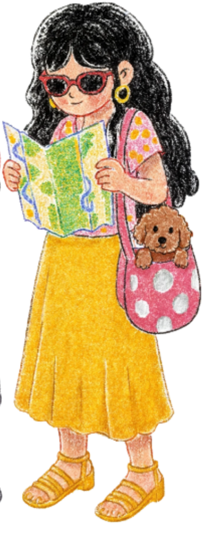
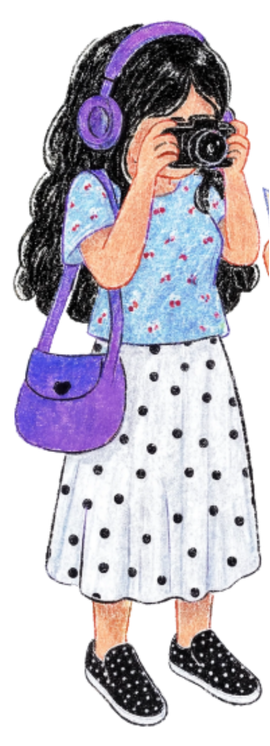

A timeless journey through historic merchant houses, herbal lanes, and the riverside breeze.
Where centuries-old spiritual devotion meets the pulsating energy of youth subcultures.
A misty mountain hamlet hanging over the ocean, wrapped in gold-mining history and cinematic nostalgia.
A romantic harbor town of red-brick European legacy, riverside promenades, and world-class sunsets.
Guide, planner, and companion dedicated to crafting authentic stories and making every traveler feel like a lifelong friend in Taipei.
Curator, spatial designer, and visual storyteller based in Taipei. Passionate about uncovering invisible architectural narratives and capturing timeless aesthetics.